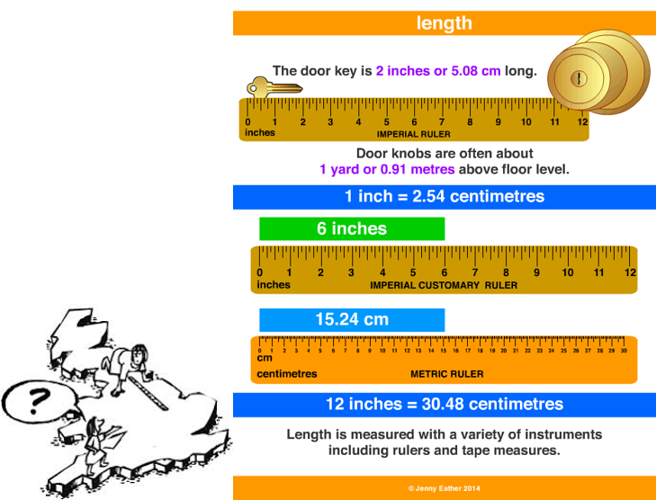

Length Conversion
Inches to millimeters Feet to MetersYards to Meters Miles to Kilometers


History:
Measurement has been important ever since humans settled from nomadic lifestyles and started using building materials, occupying land, for the complex measuring problems of civilization - surveying land to register property rights, or selling a commodity by length - a more precise unit is required. one of the oldest units of length measurement used in the ancient world was the cubit, which was the length of the arm from the tip of the finger to the elbow. This could then be subdivided into shorter units like the foot, hand or finger, or added together to make longer units like the stride.